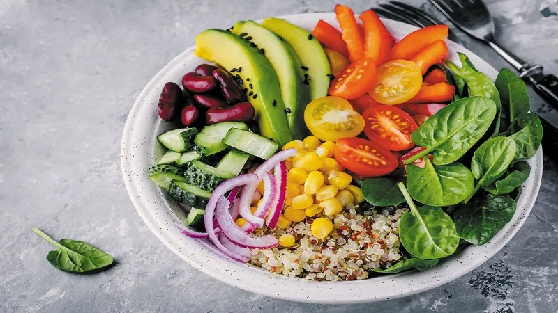

If you’re new to body building but aren’t sure how to tailor your diet to support your increased training - never fear, Maximuscle is here! We’ve pulled together five starter must do’s for all new aspiring body builders.
Bulking up is energy expensive so you’ll need to increase your daily calorie intake. Start by calculating your individual Basal Metabolic Rate (BMR) to work out how many calories this is for you based on your body weight, age and activity. Check out the Maximuscle Home of Gains Bulking Meal Plan to access the calculator and for meal choices.
During training you’ll be churning through calories and causing a certain degree of muscle damage which will adapt and grow with the correct nutrition strategy. Replace what you lost during exercise and aim to consume between 300 – 600 calories from carbohydrate and protein rich sources such as rice pudding with peanut butter, a Maximuscle Progain flapjack or a tuna loaded bagel.
To support muscle growth aim to consume between 1.4 – 2g protein per kilogram body weight (g/kgBW) per day from high quality sources such as meat, fish, eggs, nuts and dairy products. For example an 80 kg individual will need between 112g – 160g protein per day. Resist the urge to double down and add an extra scoop of protein powder to your shaker as there’s a limit to how much protein your body can optimally use per dose. Be smart with your protein and spread it evenly throughout the day in 4 to 5 doses.
You can’t out-train a bad diet. Even though you’re upping your calorie intake, increasing body fat is not the idea. Think of nutrition as the fuel to your body building vehicle. If you fill the tank with sub-par fuel you won’t be able to put the mileage in. Clear out your fridge and cupboards of all the goodies you know you won’t need and stock up on nutrient packed foods.
Getting in all the extra calories per day can be a real struggle. Introduce a casein rich snack before bed time to get in the much needed calories and a source of protein that will drip feed amino acids (building blocks of protein) into your system as you sleep. Casein is a dairy protein that can be found in cottage cheese, milk and other dairy sources. Why not keep Maximuscle Casein Chocolate Caramel or Chocolate Mint in the cupboard to mix in with a hot chocolate before sleep.